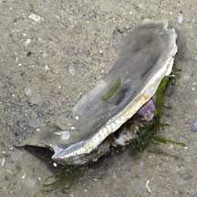
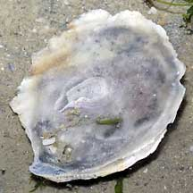
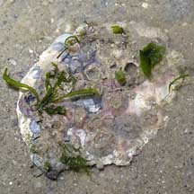
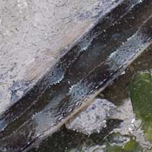
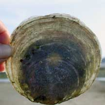
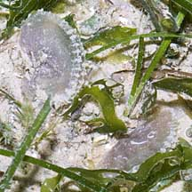
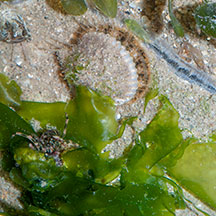

|
|
| bivalves text index | photo index |
| Phylum Mollusca > Class Bivalvia > Family Placunidae |
| Window-pane
clam Placuna sp. Family Placunidae updated May 2020
Where seen? This large animal with a thin translucent shell is still commonly encountered on our Northern shores, and some of our Southern shores. Among seagrass meadows, lying loose on the ground. Elsewhere, abundant in muddy habitats such as quiet lagoons, protected bays and mangrove lagoons. Previously grouped with the Family Anomiidae (Jingle shell clams), the Window-pane clam is now in Family Placunidae. Features: 6-12cm, elsewhere to 18-20cm. The two-part shell is thin, translucent, may be circular or semi-circular with a straight base at the hinge. Colours white or beige. One valve may be smooth and flat or slightly concave and lies facing the ground. While the other valve is slightly convex and rougher and/or covered with encrusting plants and animals. Its foot is long, narrow and cylindrical. Unlike most bivalves, Window-pane clams often lie freely on the sand (usually on the right valve) and are not attached to the ground. However, they cannot swim about. Sometimes they are seen partially buried. |
 View of both upper and underside. Changi, May 05 |
 View of concave underside. |
 View of convex upperside usually encrusted with other animals. |
| It is hard to believe that there is a living animal in such thin,
translucent shells! You can see the outline of the animal if you hold
the shells up against the light. Placuna placenta has a shell that is thin, circular, translucent (10-18cm). In dead shells, the legs of tiny V-shape on the inside of the shell are unequal in length. Placuna ephippium has a shell that is more squarish or saddle-shaped. In dead shells, the legs of tiny V-shape on the inside of the shell is equal in length. |
|
 Changi, May 11 |
 The living animal can be seen when the paper-thin shell is held up against the light. Chek Jawa, Jan 01 |
 Tiny baby window-pane clams? Changi, May 11 |
| What does it eat? Like other
bivalves, Window-pane clams are filter feeders. When submerged, the
shell opens a little - you can see the fleshy animal between the gap. It generates a current of water through the
shell and sieves out the food particles with its gills. When it is exposed at low tide, it clamps up its shell tightly to prevent water
loss. Living on a Window: Hard surfaces are scarce in the habitat where the Window-pane clams live. So seaweeds and many animals have been seen growing on the shells of a living Window-pane clams: corals, ascidians, scallops. Pea crabs may also live inside the Window-pane clam. The living clam may be carried by a sea urchin as an umbrella, or as a shelter for all kinds of animals from tiny hermit crabs, to larger octopuses. |
|
 Scallop stuck on a living Window-pane clam while some hermit crabs find shelter too . Changi, May 08 |
| Human uses: This clam is collected
and in some places cultivated. Its lustrous shells are made into
souvenirs while the animal is eaten for food. The
animal is also said to produce tiny pearls which are lead-coloured
and irregularly shaped. In the Philippines, they are made into chandeliers and wind chimes. In 1991, the clam ranked fifth among the major fishery exports of the country bringing in US$35 million. Overexploitation began in the late 1970s until the clam disappeared in the late 1980s due to world demand. Among other causes of depletion are destructive methods of fishing and gathering with methods such as trawling, use of mechanical rakes and dredges and compressor diving. Efforts to reintroduce and farm the clam is constrained by continued illegal harvesting. Status and threats: Like other creatures of the intertidal zone, they are affected by human activities such as reclamation and pollution. Over-collection can also have an impact on local populations. |
| Window-pane clams on Singapore shores |
On wildsingapore
flickr
|
| Other sightings on Singapore shores |
| Family
Placunidae recorded for Singapore from Tan Siong Kiat and Henrietta P. M. Woo, 2010 Preliminary Checklist of The Molluscs of Singapore.
|
|
Links
|